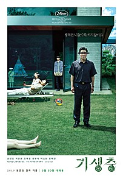
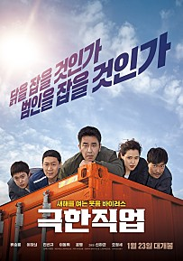

| 1 |
헌트 |
|
조직 내 숨어든 스파이를 색출하라!
‘사냥꾼’이 될 것인가, ‘사냥감’이 될 것인가!]
망명을 신청한 북한 고위 관리를 통해 정보를 입수한
안기부 해외팀 ‘박평호’(이정재)와 국내팀 ‘김정도’(정우성)는
조직 내 숨어든 스파이 ‘동림’ 색출 작전을 시작한다.
스파이를 통해 일급 기밀사항들이 유출되어 위기를 맞게 되자
날 선 대립과 경쟁 속, 해외팀과 국내팀은 상대를 용의선상에 올려두고
조사에 박차를 가한다.
찾아내지 못하면 스파이로 지목이 될 위기의 상황,
서로를 향해 맹렬한 추적을 펼치던 ‘박평호’와 ‘김정도’는 감춰진 실체에 다가서게 되고,
마침내 ‘대한민국 1호 암살 작전’이라는 거대한 사건과 직면하게 되는데……
하나의 목표, 두 개의 총구
의심과 경계 속 두 남자의 신념을 건 작전이 시작된다 |
바로가기 |
| 2 |
나일 내일, 어제의 너와 만난다 |
 |
내일, 만날 수 있을까?
어제의 너를-
스무 살의 ‘타카토시’는 지하철에서 우연히 만난
‘에미’를 보고 순식간에 마음을 빼앗긴다.
운명 같은 끌림을 느낀 타카토시의 고백으로
두 사람은 연인이 되고, 매일 만나 행복한 데이트를 한다.
하지만, 왠지 종종 의미를 알 수 없는 눈물을 보이던 에미로부터
믿을 수 없는 비밀을 듣게 된 타카토시는 큰 혼란에 빠진다.
그 비밀은 바로 타카토시와 에미의 시간은 서로 반대로 흐르고 있고,
교차되는 시간 속에서 함께 할 수 있는 시간은 오직 30일뿐이라는 것.
30일 후에도, 이 사랑은 계속될 수 있을까? |
바로가기 |
| 3 |
너의 이름은. |
|
아직 만난 적 없는 너를, 찾고 있어
천년 만에 다가오는 혜성
기적이 시작된다
도쿄에 사는 소년 ‘타키’와 시골에 사는 소녀 ‘미츠하’는
서로의 몸이 뒤바뀌는 신기한 꿈을 꾼다
낯선 가족, 낯선 친구들, 낯선 풍경들...
반복되는 꿈과 흘러가는 시간 속, 마침내 깨닫는다
우리, 서로 뒤바뀐 거야?
절대 만날 리 없는 두 사람
반드시 만나야 하는 운명이 되다
서로에게 남긴 메모를 확인하며
점점 친구가 되어가는 ‘타키’와 ‘미츠하’
언제부턴가 더 이상 몸이 바뀌지 않자
자신들이 특별하게 이어져있었음을 깨달은
‘타키’는 ‘미츠하’를 만나러 가는데...
잊고 싶지 않은 사람
잊으면 안 되는 사람
너의 이름은?<ㅡ/td>
| 바로가기 |
| 4 |
기생충 |
 |
“폐 끼치고 싶진 않았어요”
전원백수로 살 길 막막하지만 사이는 좋은 기택(송강호) 가족.
장남 기우(최우식)에게 명문대생 친구가 연결시켜 준 고액 과외 자리는
모처럼 싹튼 고정수입의 희망이다.
온 가족의 도움과 기대 속에 박사장(이선균) 집으로 향하는 기우.
글로벌 IT기업 CEO인 박사장의 저택에 도착하자
젊고 아름다운 사모님 연교(조여정)가 기우를 맞이한다.
그러나 이렇게 시작된 두 가족의 만남 뒤로, 걷잡을 수 없는 사건이 기다리고 있었으니…
제작노트 보기 |
바로가기 |
| 5 |
극한직업 |
 |
낮에는 치킨장사! 밤에는 잠복근무!
지금까지 이런 수사는 없었다!
불철주야 달리고 구르지만 실적은 바닥, 급기야 해체 위기를 맞는 마약반!
더 이상 물러설 곳이 없는 팀의 맏형 고반장은 국제 범죄조직의 국내 마약 밀반입 정황을 포착하고
장형사, 마형사, 영호, 재훈까지 4명의 팀원들과 함께 잠복 수사에 나선다.
마약반은 24시간 감시를 위해 범죄조직의 아지트 앞 치킨집을 인수해 위장 창업을 하게 되고,
뜻밖의 절대미각을 지닌 마형사의 숨은 재능으로 치킨집은 일약 맛집으로 입소문이 나기 시작한다.
수사는 뒷전, 치킨장사로 눈코 뜰 새 없이 바빠진 마약반에게 어느 날 절호의 기회가 찾아오는데…
범인을 잡을 것인가, 닭을 잡을 것인가! |
바로가기 |